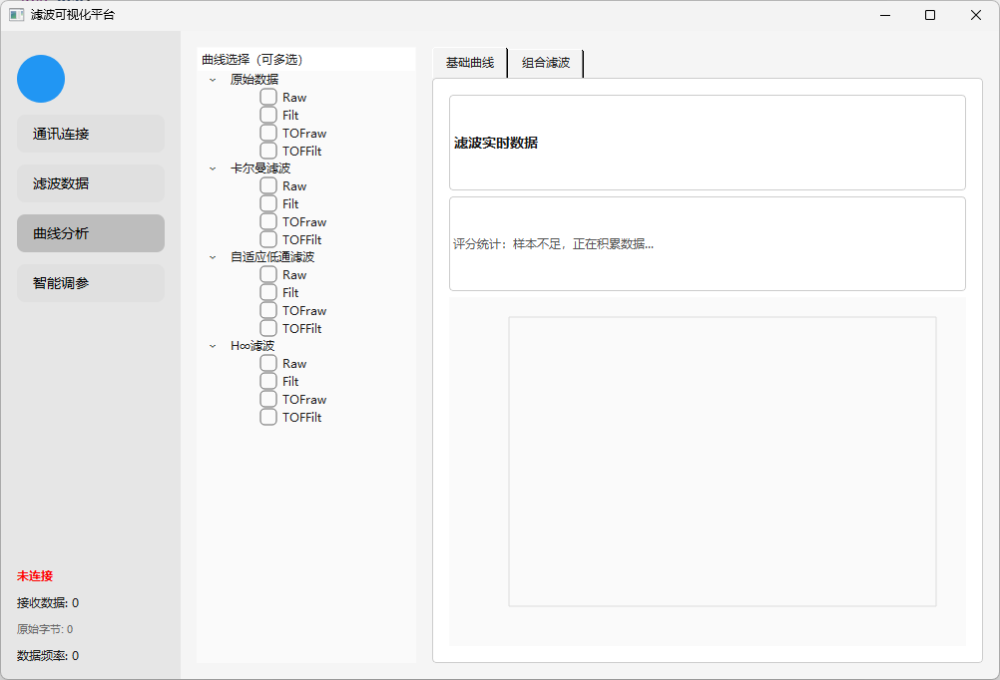
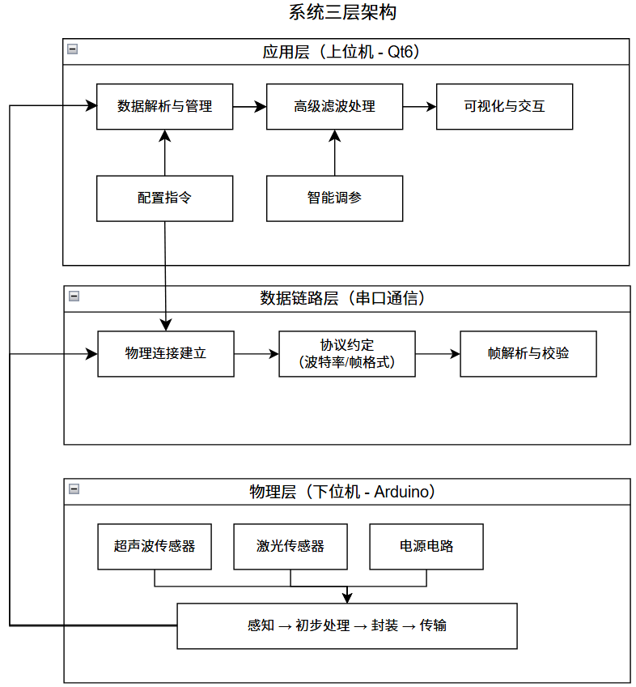

应聘方向：嵌入式软件工程师 / 上位机开发（Qt · C++）
本科阶段独立完成了一套从下位机采集、串口协议、滤波算法到可视化界面的完整系统。习惯把问题拆到可测量，再用实测数据验证结论——而不是停在「跑通 Demo」。

从硬件接线到界面落地，我更愿意把一条链路完整走通，而不是只负责其中一小段。
本科毕业设计课题为《基于多传感器融合的数据显示平台设计》。面向无人机高度测量场景，我完成了双传感器采集固件、自定义串口协议、三路并行滤波、实时波形可视化，以及基于评分器与大模型 API 的参数自动整定闭环。
同期还用 C# / .NET 8 WinForms 做了一版工程化迭代实现，把同一套算法思路在第二套技术栈上复现，并补齐了评分器与自动调参器的完整实现。两套代码都开源在仓库里，可对照阅读。
我做验证的方式偏「工程化」：用 115200 波特率下连续 8 小时通信测试、MATLAB 仿真与真实传感器数据对照实验，把每个结论落到具体数字上——标准差从 8.55 cm 降到 7.44 cm，最坏情况误差从 13.6 cm 降到 11.8 cm，而不是只给一张好看的波形图。
按工程链路分组，覆盖语言、上位机、嵌入式、通信协议、算法与工具。
一个从硬件到算法、从协议到界面全部自己搭起来的完整系统。下面按「问题 → 做法 → 结果」展开。
面向无人机高度测量：超声波与激光双源采集，经自定义串口帧上传 Qt6 上位机，三路滤波并行计算并同屏对比波形，再由评分器 + DeepSeek API 自动推荐滤波参数并回写，形成「采集 → 评分 → 调参 → 复评」闭环。
独立设计并实现一套高实时性、可观测、具备自适应能力的验证平台，让不同滤波算法在同一数据集上可对比、可评分、可自动调参。

Arduino Uno R3 驱动 HC-SR04 与 TOF050F，完成高度数据采集与初步处理，经 USB-TTL / 数传模块上传。
帧头 0xAA / 帧尾 0x55 + 校验字段，8 KB 环形缓冲循环扫描，支持粘包重同步；全链路异步非阻塞。
Qt6 四个功能页：通讯连接、滤波数据、曲线分析、智能调参；三路滤波并行、波形叠加、参数自动回写。
测量噪声 R 在线自适应，Q / Alpha 可锁定。对高斯噪声平滑效果最好，抑制整体抖动。
窗口内识别尖峰脉冲并替换，滤除野值同时保留信号边缘，适合传感器偶发跳变。
不依赖噪声统计特性，在模型失配与强干扰下保证估计误差有界、不发散。
技术细节、界面截图与实测波形见在线项目页与 GitHub 仓库。
数据来自毕业论文第 4 章：50 Hz 固定帧率、115200 波特率 8 小时通信测试，以及 MATLAB 仿真与真实传感器数据对照实验。
| 指标 | 结果 | 说明 |
|---|---|---|
| 数据吞吐 | ≥ 50 帧/秒 | 多源传感器实时接收与处理 |
| 通信可靠性 | 丢包率 ≈ 5% | 115200 bps 连续运行 8 小时 |
| 自适应卡尔曼滤波 | 8.55 → 7.44 cm | 数据标准差 ↓12.97% |
| 自适应中值滤波 | 33.47 → 4.28 cm | 最大脉冲幅度 ↓87.22%，滤除率 99%~100% |
| 卡尔曼 + 中值组合 | 91.5% / 89.4% | 高斯噪声抑制率 / 脉冲滤除率 |
| 卡尔曼 + H∞ 组合 | 13.6 → 11.8 cm | 强干扰下最坏情况误差 |
| DeepSeek 智能调参 | < 70 → ≈ 80 分 | 有无 AI 调参的对照实验结论 |
从传感器接线、固件、帧协议、算法实现到桌面界面，一条链路全部自己完成，能定位并解决跨层问题，而不是只熟悉某个模块。
不是「跑一次成功」：设计了帧同步、校验、环形缓冲与粘包重同步，并用 8 小时连续通信测试量化丢包率。
三路滤波并行、组合策略按场景切换、滑动窗口评分器 + 参数自动回写，把算法变成可对比、可整定的系统能力。
同一算法思路分别用 Qt6 / C++17 与 C# / .NET 8 实现，源码均在仓库开源，便于对照阅读与协作开发。
全部截图来自真实运行的上位机与实物平台，点击可放大查看。
完整源码、架构文档与可编辑流程图都在 GitHub 仓库，欢迎直接查看。
毕业设计《基于多传感器融合的数据显示平台设计》，围绕多传感器数据采集、滤波算法与可视化平台展开，独立完成硬件搭建、固件开发、上位机实现与实测验证。
完整工程已开源：Qt6 上位机、C# / .NET 8 迭代版、Arduino 与 STM32 固件、可编辑 drawio 流程图、实测截图，并配套论文摘要节选与架构文档。
详细技术材料见 GitHub 仓库 README 与 docs 目录。
如果团队在招嵌入式 / 上位机方向的应届生，欢迎聊聊。我可以提供完整工程源码、论文摘要节选与实测数据。